Receiving signals
Historically, in order to receive RF signals you would require expensive hardware, which may only work for a small range of frequencies. With the popularization of Software Defined Radio, cheap, configurable radio solutions can now easily be developed.
Hardware: Software Defined Radio
In order to receive and signals you'll need an SDR:
- HackRF One
- BladeRF
- RTL-SDR
- FUNcube Pro+
Hardware: Antennas
Antennas are generally designed to work within specific frequency bands, as their size generally relates to the wavelength of signals and hence determines the frequencies at which they can operate (as a general rule, the larger the antenna, the lower the frequency band on which it operates as wavelength is inversely proportional to frequency).
Below are a few examples of antenna types (there are many available!):
Omni-directional, limited to narrow frequency band - this is the type you are most likely to use with your SDR:
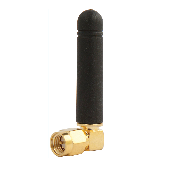
Omni-directional, wideband antenna - for covering a much larger range of frequencies when scanning a wide RF environment:
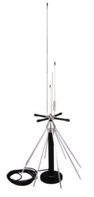
Directional "Yagi" antenna - for focusing the beam in a very specific direction (used for terrestrial TV reception):
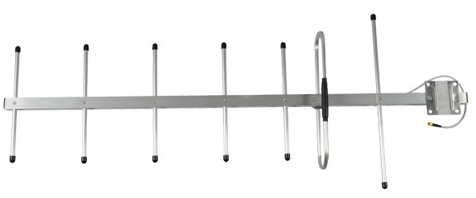
TODO: Add some antenna theory here to explain how they work
Hardware: Connectors
Below are some of the most common connectors you will encounter in the world of RF: (a more exhaustive list is available here)
SMA - This is the most common connector you will encounter when using SDR (good for up to 18GHz)
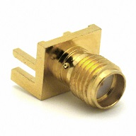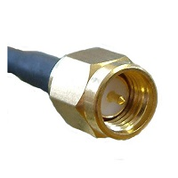
RP-SMA - These are often used on WiFi routers - do not confuse with SMA, as they are not compatible with SMA!
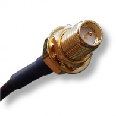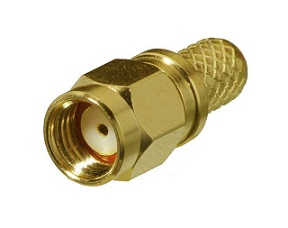
MCX - These are used on the RTL-SDR and some older WiFi PC cards
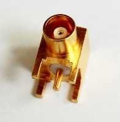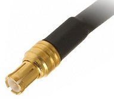
BNC - Often used for lower frequency antennas (only good for up to 4GHz)
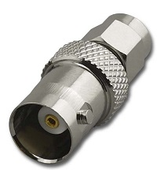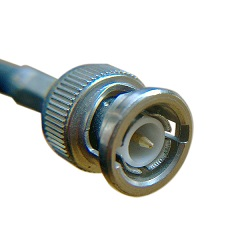
N-type - used for more industrial purposes e.g. radar, mobile base stations
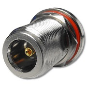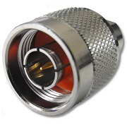
Hardware: Amplifiers
Sometimes the signal you are trying to receive is very low level and therefore, an amplifier is required. Below is an example of a typical Low Noise Amplifier that has been successfully used with an SDR:
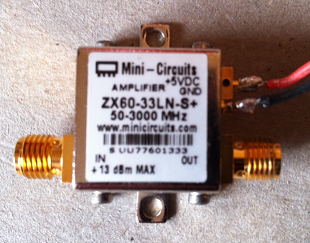
TODO: Add more info about amplifiers and explain Signal to Noise ratio
Software: GNU Radio
GNU Radio is a free and open-source software development toolkit that provides signal processing blocks to implement software radios. It can be used with readily-available low-cost external RF hardware to create software-defined radios, or without hardware in a simulation-like environment. It is widely used in hobbyist, academic and commercial environments to support both wireless communications research and real-world radio systems.
The GNU Radio Live DVD can be downloaded here (it supports all the major SDRs)